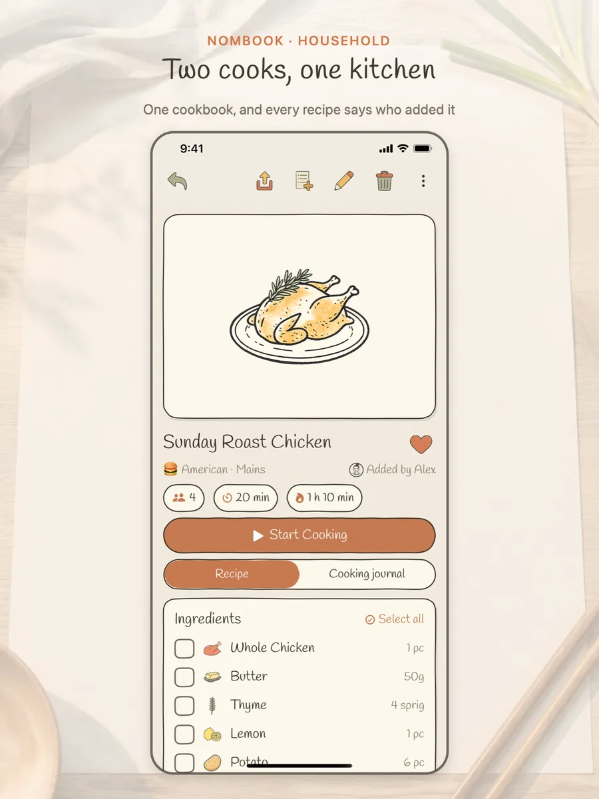
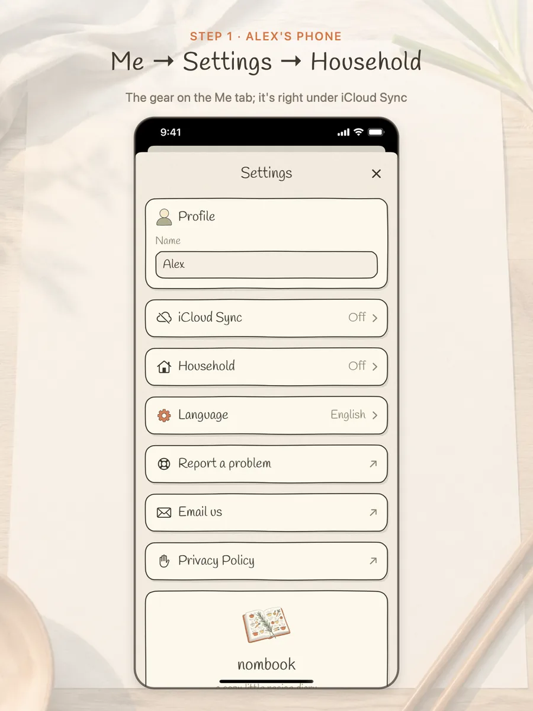
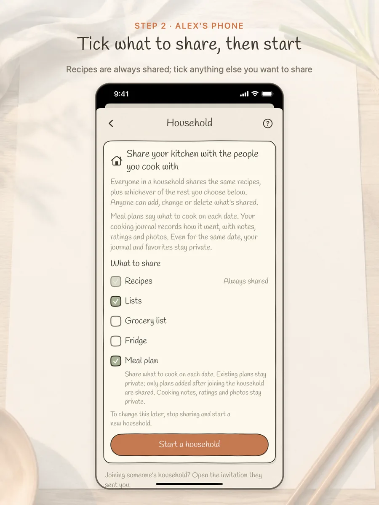
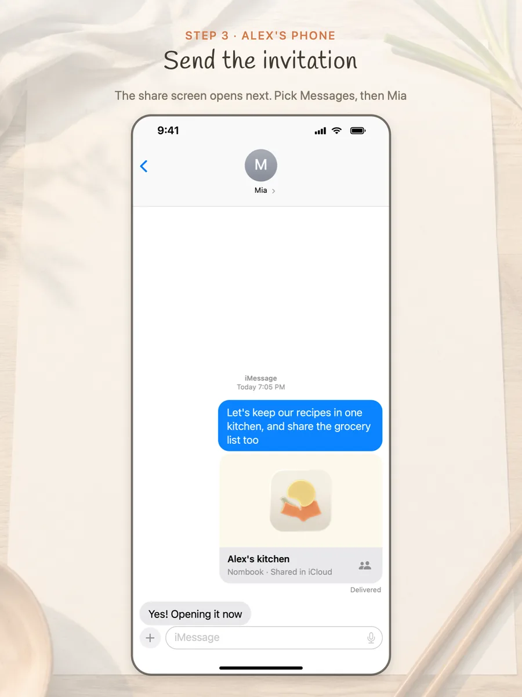
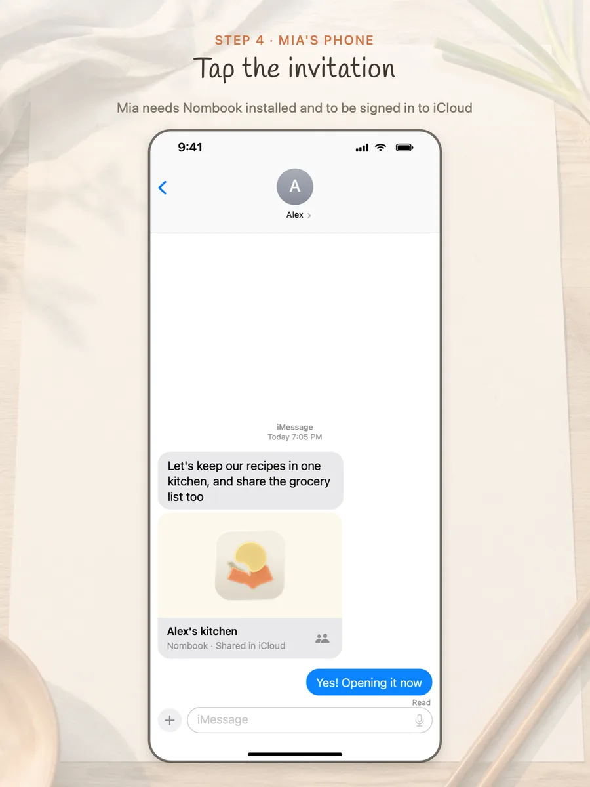
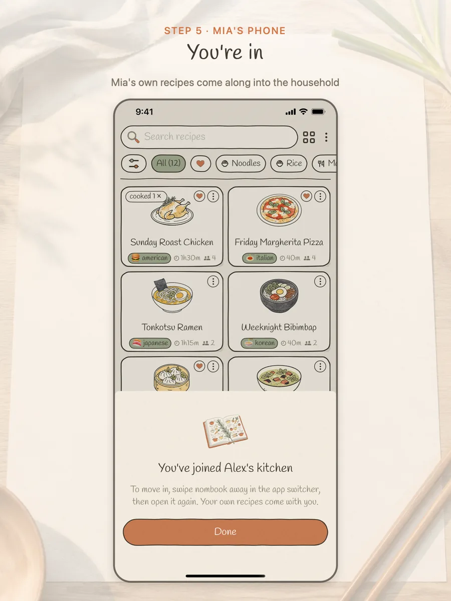
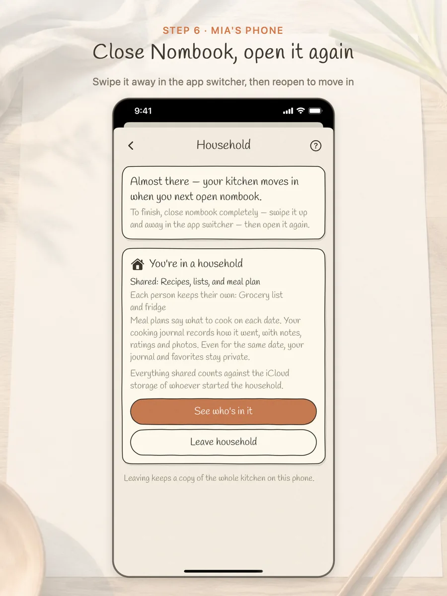
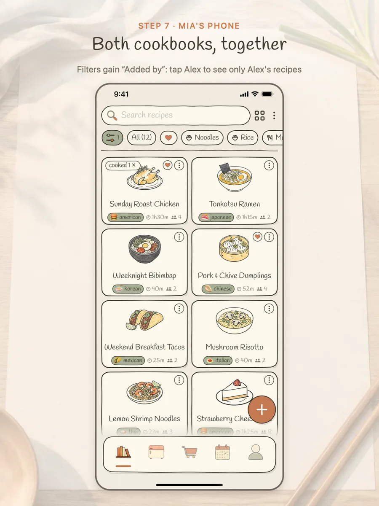
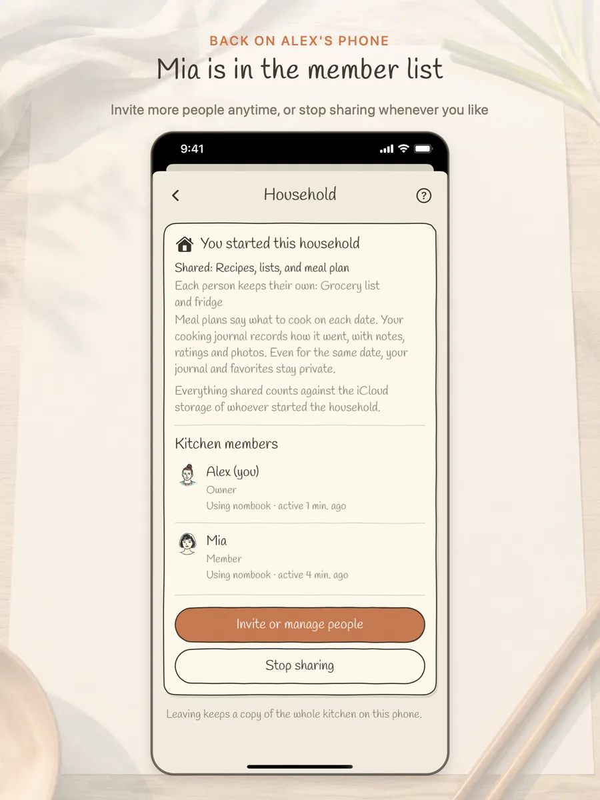

How a Nombook household works
One person starts a household and sends an invitation; the other taps it to join. From then on you share one cookbook, and every recipe says who added it. Here's Alex inviting Mia.
- Both phones need Nombook installed and signed in to iCloud.
- Whoever starts the household needs iCloud Sync turned on in Settings.

Two cooks, one kitchen · every recipe says who added it 
Step 1 · Alex: Me → Settings → Household 
Step 2 · Alex: tick what to share, then tap “Start a household” 
Step 3 · Alex: in the share screen that opens, pick Messages and send it to Mia 
Step 4 · Mia: tap the invitation 
Step 5 · Mia: she's in, and her own recipes come with her 
Step 6 · Mia: swipe Nombook away in the app switcher, then open it again 
Step 7 · Both cookbooks are together, and you can filter by “Added by” 
Done · Mia shows up in Alex's member list
Questions
Can everyone edit the shared recipes?
Yes. Anyone in the household can add, change or delete what's shared.
Can the others see my cooking journal and favorites?
No. Your notes, ratings, photos and favorites stay private.
Are meals I planned before joining shared?
No. Plans from before you joined stay private; only meals planned afterwards are shared (if the meal plan is ticked).
Where is the shared kitchen stored?
In the iCloud of whoever started the household, using their iCloud storage. Nombook has no server of its own.
How do I change what's shared?
What's shared is set when the household starts. To change it, stop sharing and start a new household.
Do I keep my recipes if I leave or stop sharing?
Yes. Everyone keeps a copy of the kitchen as it is on their own phone.